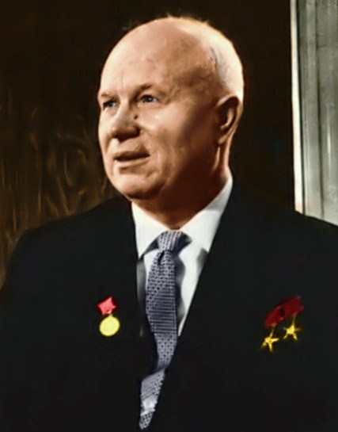

ソビエト
社会主義共和国連邦
(
しゃかいしゅぎきょうわこくれんぽう
)
建国から崩壊まで
年表
最高指導者一覧
国旗の由来
国歌の由来
top
ニキータ・フルシチョフ
生い立ち
 1894年4月17日にロシア
帝国
(
ていこく
)
のクルスク県カリノフカに誕生する。父親のセルゲイ・フルシチョフは
炭坑夫
(
たんこうふ
)
で、母親はクセニアである。母方の祖父は
農奴
(
のうど
)
でロシア
帝国
(
ていこく
)
陸軍に勤務していた。家族と共にウクライナ・ドンバス地方のユゾフカ（スターリノ、現在のドネツィク）に移り、15
歳
(
さい
)
で
鉛管
(
えんかん
)
工として働き始める。第一次世界大戦では工場で勤務していたため、
徴兵
(
ちょうへい
)
を
猶予
(
ゆうよ
)
された。
概要
1953年9月、第一書記に就任し、
失脚
(
しっきゃく
)
する1964年10月まで最高指導者の地位にあった。1956年2月のスターリン批判によってその独裁と
恐怖
(
きょうふ
)
政治を世界に
暴露
(
ばくろ
)
し、非スターリン化を
掲
(
かか
)
げた。在任時にはアメリカ合衆国を中心とする西側
陣営
(
じんえい
)
と平和共存を
図
(
はか
)
り、軍拡競争を
抑制
(
よくせい
)
して軍縮と宇宙開発競争を積極的に行った。他方で
中華
(
ちゅうか
)
人民共和国・アルバニアと激しく対立し、同年10月のハンガリー動乱に際して軍事
介入
(
かいにゅう
)
を行い、キューバに
核
(
かく
)
ミサイルを配備してキューバ危機を招いた。 また、自身が無神論者であった
為
(
ため
)
に宗教に対する
弾圧
(
だんあつ
)
を再び強化した。それでもスターリン時代よりは物流や学術の交流といった点で開放的だったとされている。
エピソード
フルシチョフは激情家として知られ、国際的な
舞台
(
ぶたい
)
で話題を呼ぶ事件をいくつも引き起こした。有名なもののひとつは、1956年11月18日にモスクワのポーランド大使館でのレセプションで、西側諸国の大使に向って「あんたらを
葬
(
ほうむ
)
ってやる」との暴言を
吐
(
は
)
いたことである。
他
(
ほか
)
にも1960年10月12日の国際連合総会で、ソ連代表の提出した「植民地主義非難決議」に対し、フィリピンのロレンソ・スムロン代表が「ソ連の東ヨーロッパ諸国への
関与
(
かんよ
)
こそ正に植民地主義であり非難されるべき」と
逆襲
(
ぎゃくしゅう
)
したことに
怒
(
いか
)
ったフルシチョフは、
腕時計
(
うでどけい
)
が
壊
(
こわ
)
れるほど
拳
(
こぶし
)
で机をバンバン
叩
(
たた
)
き
始
(
はじ
)
めてスムロンの演説を
妨害
(
ぼうがい
)
した事件[7] がある。 また、1959年7月にアメリカのリチャード・ニクソン副大統領がモスクワを訪問した際に、博覧会会場に展示してあるアメリカ製のキッチンおよび電化製品を前にして、ソ連の人工衛星である「スプートニク」の開発成功・アメリカにおける宇宙開発の
遅
(
おく
)
れ・アメリカの自由経済とソ連の計画経済を対比し、資本主義と共産主義のそれぞれの長所と短所について討論した。この際に、ニクソンは消費財の
充実
(
じゅうじつ
)
と民生の重要性を堂々かつ理路整然と語ったのとは対照的に、フルシチョフは自国の宇宙
及
(
およ
)
び軍事分野における成功を感情的にまくしたてた。その討論内容は後に「台所論争」（キッチン討論）として有名になった。